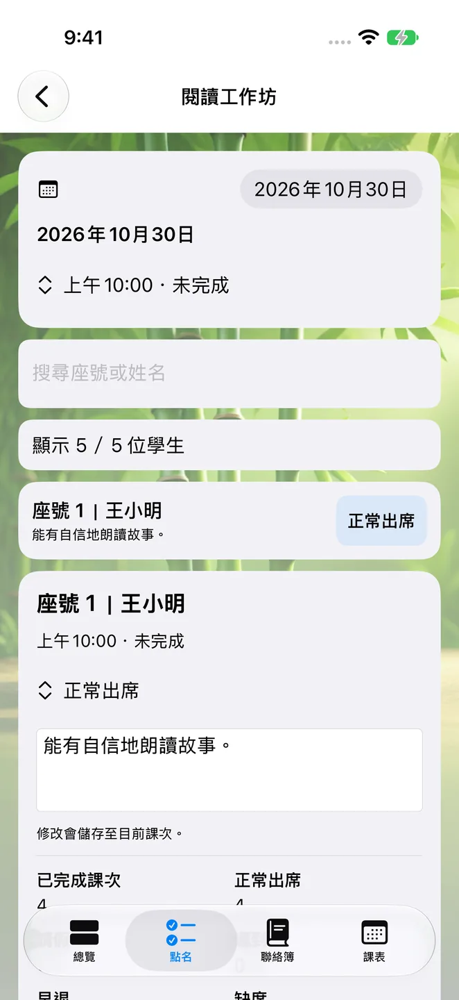
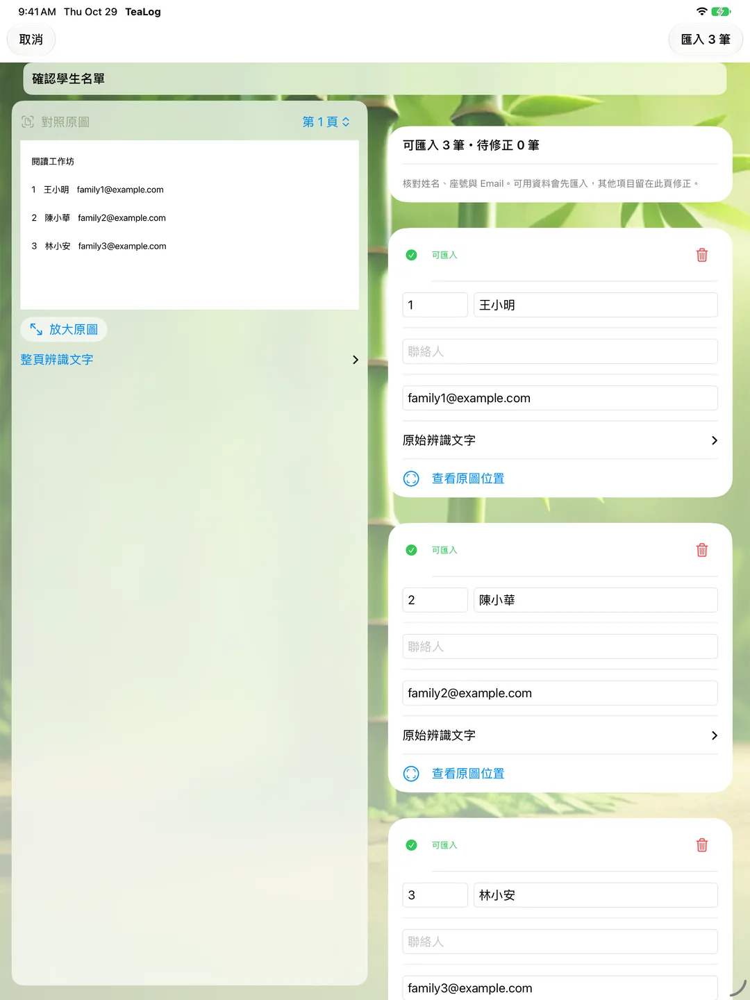
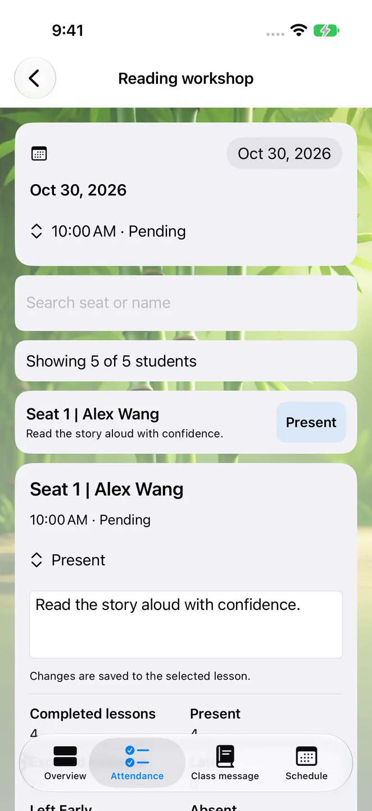
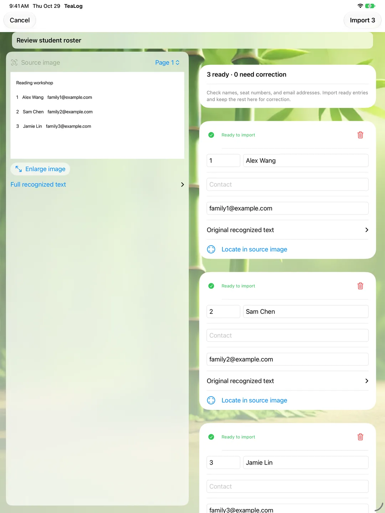

師記 TeaLog
從下一堂課，到今天值得記下的進步。
排好每週的課程，上課時完成點名，順手留下一句「今天能有自信地朗讀故事」。把課次、學習目標、進度與學生備註放在一起，回顧教學或準備給家長的訊息時，就有紀錄可以參考。

1.3 更新：讓每天的教學紀錄更順手
2026 年 10 月 29 日上架（台灣時間）。這次更新著重名冊檢閱、資料保存與不同螢幕的日常操作。
- 20 種介面語言：以熟悉的語言管理課程；文字辨識與 AI 支援語言可能與介面語言不同。
- 名冊先確認，再匯入：掃描名冊後，對照原圖檢查姓名、座號與聯絡信箱，修正後再加入學生。
- 資料與課次更可靠：強化資料保存與排課，讓課程通知開啟對應課次，並改善報告統計。
- 適應不同操作方式：改善 iPhone Duo、iPad、大字級版面與外接鍵盤操作。
- 訂閱結束仍可回顧：保留既有資料的閱讀、預覽及匯出功能。
- 可用裝置
- iPhone / iPad
- 下載方式
- 免費下載
免費下載；新增與編輯紀錄需有效的 TeaLog Pro 訂閱。符合資格者可於訂閱確認後免費試用 3 個月，期滿自動續訂，除非取消。訂閱結束後仍可閱讀與匯出既有資料。




把課務整理成可以接續的紀錄
AI 協助整理，不用設定 API 金鑰
Apple Intelligence 可協助從課堂紀錄整理訊息與報告草稿，不需要申請外部 API 金鑰。生成需要相容裝置、已啟用 Apple Intelligence、已下載模型及支援的語言；無法使用 AI 時，仍可管理課務、手動記錄及匯出，摘要會改用基本整理方式。分享前請先檢查草稿。
訂閱與裝置需求
支援 iPhone 與 iPad，需要 iOS／iPadOS 26.2 或以上。App 免費下載；新增與編輯紀錄需要有效的 TeaLog Pro 訂閱，提供月費與年費方案。
符合資格的新訂閱者，可在確認訂閱後免費試用 3 個月；試用結束後依所選方案收費並自動續訂，除非取消。價格與資格以購買畫面為準，可在 Apple 帳號設定管理或取消。訂閱結束後，既有紀錄仍可閱讀與匯出。
資料預設留在裝置上
不需要建立開發者帳號。課程與學生紀錄預設保存在本機，可自行啟用 iCloud 同步；名冊辨識在裝置端執行，AI 草稿使用裝置上的系統模型。開發者沒有營運儲存教學紀錄的伺服器。
以上為 1.3 的實際模擬器畫面，使用虛構示範課程與學生資料。
TeaLog
From your next lesson to the progress worth remembering.
Plan the week, take attendance, and leave a note such as “Read the story aloud with confidence.” Keep each lesson’s goals, progress, and student notes together, ready to revisit when reviewing your teaching or preparing an update for families.

Version 1.3: smoother everyday teaching records
Released October 29, 2026 (Taiwan time). This update focuses on roster review, reliable records, and working across screen sizes.
- 20 interface languages: manage courses in a familiar language. OCR and AI language availability may differ from interface support.
- Review before importing: compare scanned names, seat numbers, and contact emails with the source image, and correct them before adding students.
- More reliable records and schedules: improvements to storage, scheduling, report statistics, and notifications that open the correct lesson.
- Flexible layouts and controls: improved iPhone Duo, iPad, larger-text layouts, and external-keyboard access.
- Keep access to your records: read, preview, and export existing data after a subscription ends.
- Devices
- iPhone / iPad
- Download
- Free download
Free download; creating and editing records requires an active TeaLog Pro subscription. Eligible new subscribers can confirm a plan with a 3-month free trial, followed by automatic renewal unless canceled. Existing records remain readable and exportable after the subscription ends.




A record you can pick up at the next lesson
AI assistance without an API key
Apple Intelligence can help turn lesson records into message and report drafts without an external API key. Generation requires a compatible device, enabled Apple Intelligence, a downloaded model, and a supported language. If AI is unavailable, schedules, manual notes, and export remain usable, with basic summaries as a fallback. Review drafts before sharing.
Subscriptions and device requirements
Available for iPhone and iPad, requiring iOS/iPadOS 26.2 or later. The app is free to download; creating and editing records requires an active monthly or yearly TeaLog Pro subscription.
Eligible new subscribers can confirm a plan with a 3-month free trial. After the trial, the selected plan is charged and renews automatically unless canceled. Prices and eligibility appear before purchase. Manage or cancel in Apple Account settings. Existing records remain readable and exportable after the subscription ends.
Your records stay on device by default
No developer account is required. Course and student records are stored locally, with optional iCloud sync. Roster recognition runs on device, and AI drafts use the system’s on-device model. The developer does not operate a server that stores your teaching records.
These are actual version 1.3 simulator screenshots using fictional demonstration courses and students. The Traditional Chinese interface calls the app 師記.